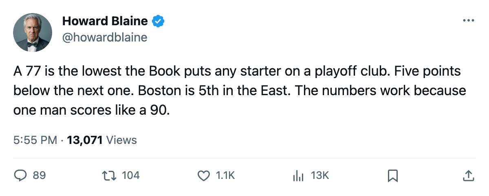
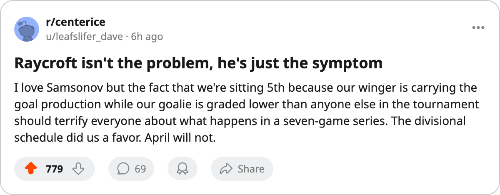

The Lowest 77: Boston is 5th in the East on a goaltender the Book puts 5 points below the next starter on a playoff club
Andrew Raycroft grades 77 overall, the lowest of any starting goaltender in a playoff position in either conference, and Sergei Samsonov's 144-point pace has carried the arithmetic to 86.
 Howard BlaineSenior writer, The Blaine Rankings · The Hockey Gazette
Howard BlaineSenior writer, The Blaine Rankings · The Hockey Gazette
 Andrew Raycroft81 is a 77. The Bureau's Book puts him below every other starting goaltender currently sitting inside the top 8 in either conference. The next lowest in that group is
Andrew Raycroft81 is a 77. The Bureau's Book puts him below every other starting goaltender currently sitting inside the top 8 in either conference. The next lowest in that group is  Byron Dafoe82 in Atlanta and
Byron Dafoe82 in Atlanta and  Tommy Salo85 in Edmonton, both at 82.
Tommy Salo85 in Edmonton, both at 82.  Boston Bruins sits 5th in the Eastern Conference with 86 points, on a 3-game win streak, and the arithmetic holds because of what sits on the wing.
Boston Bruins sits 5th in the Eastern Conference with 86 points, on a 3-game win streak, and the arithmetic holds because of what sits on the wing.
 Sergei Samsonov87. A 26-year-old left winger taken 8th overall in 1997, Samsonov has 111 points in 63 games, a 144-point pace across 82. He sits 7th in the Art Ross race with 66 assists, the most by any player on the Boston roster and the second-highest total among the 30 names at the top of the scoring table. His overall grade of 81 undersells what the production line says he is right now. The Boston payroll is $43.97M, and the cost per point sits at $0.51M.
Sergei Samsonov87. A 26-year-old left winger taken 8th overall in 1997, Samsonov has 111 points in 63 games, a 144-point pace across 82. He sits 7th in the Art Ross race with 66 assists, the most by any player on the Boston roster and the second-highest total among the 30 names at the top of the scoring table. His overall grade of 81 undersells what the production line says he is right now. The Boston payroll is $43.97M, and the cost per point sits at $0.51M.
The goal differential tells the rest of the story. Boston has outscored opponents 237 to 233 this season, a margin of plus-4, which is 5th in the Eastern Conference. A goaltender graded 77 concedes more than the average starter, which means the offense must be above average just to break even. Samsonov's 144 pace is what makes that equation work. Take him out, or cool him to his base grade, and the plus-4 becomes a minus.
Raycroft is no disaster. He has 30 wins in 52 starts, a 3.03 GAA, and a .863 save percentage. Those are playable numbers for a 5th-round pick from 1998 working his first season as a primary starter at age 27. They sit below average, and the Book marks the gap between Raycroft and the rest of the field as real.  Alexei Zhamnov85 does not play in Boston. The gap lives between the pipes.
Alexei Zhamnov85 does not play in Boston. The gap lives between the pipes.
The divisional arithmetic holds because the schedule has been kind
Inside the Northeast, Boston is 10 wins, 1 overtime win, 4 losses, and 2 overtime losses across 17 games. Toronto leads the division with 11 wins, 1 overtime win, 4 losses, and 1 overtime loss in the same span. Against Montreal, Boston is 4-0-1. Against Buffalo, 2-1-0 plus one overtime win. Those are the clubs carrying the divisional column. The cushion will thin: three of Boston's 11 remaining games are inside the Northeast. Eight are not.
The remaining schedule tells you whether the standing holds. Boston visits  Phoenix Coyotes on 2005-03-18, their first meeting of the season, then visits
Phoenix Coyotes on 2005-03-18, their first meeting of the season, then visits  St. Louis Blues on 2005-03-21 and
St. Louis Blues on 2005-03-21 and  Los Angeles Kings on 2005-03-22. All three are away. The Coyotes are 16-18 at home. The Blues and the Kings sit below .500 and are fighting for the same 8th spot in the Western Conference, which means the games will be tight and the crowd will be involved.
Los Angeles Kings on 2005-03-22. All three are away. The Coyotes are 16-18 at home. The Blues and the Kings sit below .500 and are fighting for the same 8th spot in the Western Conference, which means the games will be tight and the crowd will be involved.
What 86 buys you
The Eastern Conference standings have  Toronto Maple Leafs at 116,
Toronto Maple Leafs at 116,  New Jersey Devils at 97,
New Jersey Devils at 97,  Tampa Bay Lightning at 94,
Tampa Bay Lightning at 94,  Washington Capitals at 89, and Boston at 86 in 5th. The 8th spot belongs to Atlanta at 74 with 13 games left. Boston is 12 points clear of 8th with 11 games to play. The mathematical path to falling out of a playoff position runs through Boston losing most of its remaining games while Atlanta wins nearly all of its, a scenario the desk does not see unfolding. The more realistic question is seed: Washington has 89, Tampa Bay has 94, and a slide to 6th or 7th changes who they face in April.
Washington Capitals at 89, and Boston at 86 in 5th. The 8th spot belongs to Atlanta at 74 with 13 games left. Boston is 12 points clear of 8th with 11 games to play. The mathematical path to falling out of a playoff position runs through Boston losing most of its remaining games while Atlanta wins nearly all of its, a scenario the desk does not see unfolding. The more realistic question is seed: Washington has 89, Tampa Bay has 94, and a slide to 6th or 7th changes who they face in April.
The Book grades a goaltender at 77 by reading the save percentage and the goals-against, which say the save is below average. Whether the team stays in the tournament is a separate question the grade does not address. Boston's construction has papered over that with offense and a soft divisional slate. In April, with a full 82-game sample and the divisional cushion spent, a 77-goaltender club faces a better-calibrated opponent in every round.
Samsonov's contract situation and the front office's reasoning will come into focus around what the calendar has as the trade deadline in 3 days, but the desk has no figure on his salary or his term, and the payroll line at $43.97M tells you there is no room to buy a goaltender of note without breaking something else. The Boston front office has built this season on the assumption that 81-grade wing play plus divisional familiarity plus a 77-goaltender who never stops working is enough for 86 points. The standings, as they say at Christmas, are the standings in April, unless they are not. A 77 in net is where they stop being.

